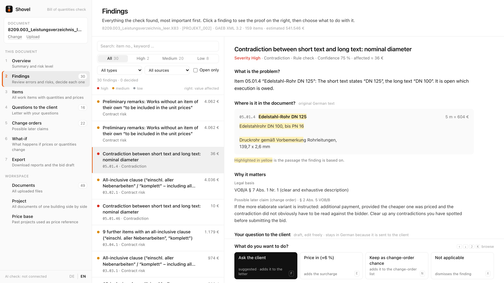
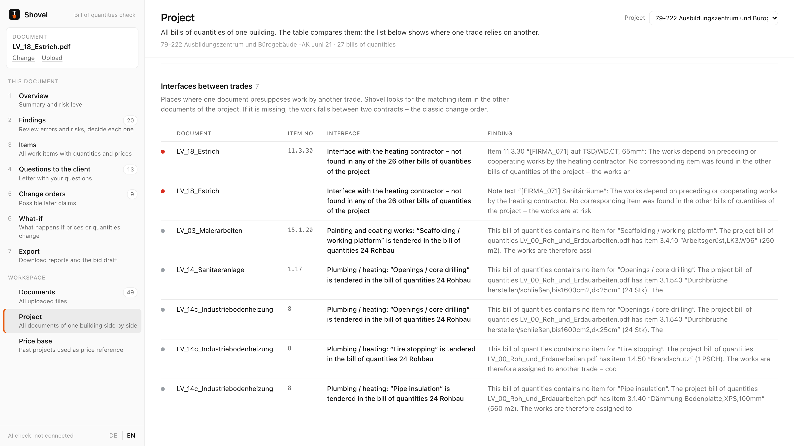

Digs through every Leistungsverzeichnis before you bid.
Rechnungshof Baden-Württemberg, Denkschrift 2020, 48 large public projects
Arithmetic, contradictions, missing quantities, withdrawn standards.
Unit prices and quantity ratios against awarded LVs.
Construction sense for scope and interfaces. No quote, no finding.

Real dataset file, position 05.01.4. One key turns it into a Bieterfrage.

Estrich 11.3.30: insulation “by the heating contractor”, found in none of the other 26 LVs.
The finished letter, as a Word file.
Per position, back into the estimate as GAEB X84.
Claim basis and to-do for the Bauleiter.
The estimator decides every finding. Unit prices stay in the company.